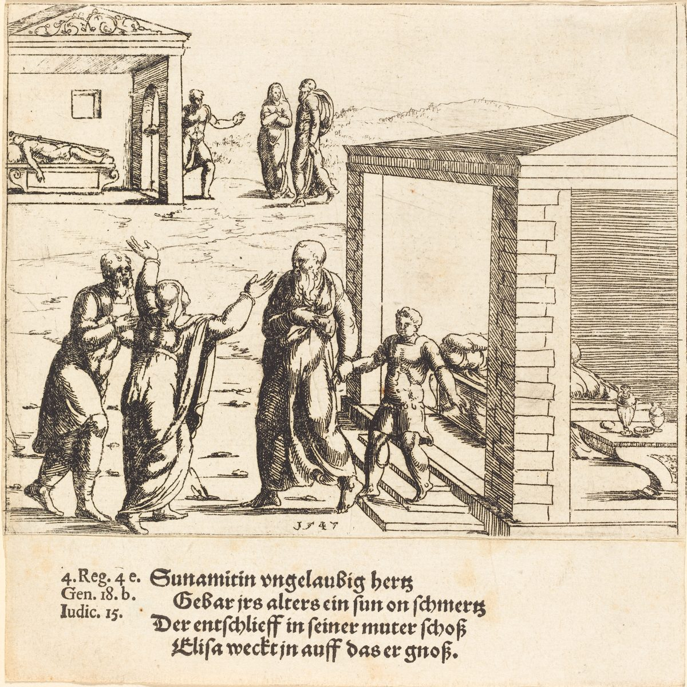

2 Kings 4 — The Mister Translation

2 Kings 4:32–37. The etching is dated 1547 and lettered beneath with four lines of German verse and the references “4. Reg. 4” (the Vulgate’s fourth book of Kings is our 2 Kings), “Gen. 18” and “Iudic. 15”. In one plate it shows the boy dead on his bed and then standing, led out by Elisha, with his mother reaching toward him. The Hebrew says nothing of a hand, and only that she took him up herself (verse 37).

Translator's Notes — verse by verse
⭐ “A certain woman of the wives of the sons of the prophets”. She has no name, and neither has her husband. Rashi says she was Obadiah’s wife, and Radak says “they said” so; the Targum puts the name into her mouth, “your servant Obadiah my husband”, and adds that he borrowed to feed the prophets Jezebel was killing, so as not to feed them from Ahab’s goods. Josephus has it too: the widow of Obadiah, Ahab’s steward, whose husband borrowed to keep a hundred hidden prophets alive (Antiquities 9.47, Niese’s Greek, numbered 9.4.2 in Whiston). The Hebrew of 1 Kings 18:4 and 18:13 (now on these pages) says he hid a hundred, fifty to a cave, and sustained them with bread and water; it says nothing of a loan. Obadiah “feared Jehovah greatly” (1 Kings 18:3, now on these pages), and her words here are “your servant feared Jehovah”, but the verse does not say whose widow she is. The ASV and the KJV have “the sons of the prophets”, the NIV “a man from the company of the prophets”, and the TLB “one of the seminary students”. See the sons of the prophets, who are with Elisha from 2 Kings 2:3 (now on these pages).
“To take my two children for himself as slaves”. The Hebrew word is yeladay, “my children”, and it does not say they are boys; two verses on, one of them is “her son”. The ASV has “my two children” and the NWT 1984 “both my children”, but the KJV has “my two sons”, the NIV “my two boys”, and the Douay “my two sons to serve him”. The law lets a man be sold for debt and sets a term: six years (Exodus 21:2), or, for a brother who has sold himself, until the jubilee, when “he and his children with him” go out (Leviticus 25:39–41, both now on these pages). Neither passage speaks of a dead man’s children, and the verse does not call the creditor wrong. Isaiah 50:1 asks which of Jehovah’s creditors he sold his people to, and Nehemiah 5:5 has fathers handing over sons and daughters (both yet to come in this translation).
⚠ “Except a flask of oil”. Asuk stands in one verse of the Hebrew Bible, this one, and its root is the verb for anointing. Rashi reads it as “enough for an anointing of oil”, a smear. The KJV and the ASV have “a pot of oil”, the NIV “a small jar of olive oil”, the Geneva “a pitcher of oil”, and the NWT 1984 “a spouted jar of oil”. The Douay has “a little oil, to anoint me”, and the Greek Bible in the Vaticanus tradition reads it the same way, “oil with which I will anoint myself”. “Flask” is this page’s guess at a vessel; the word may name what she has to anoint with, not what holds it. It is the opposite of the jug in 1 Kings 17:12 (now on these pages), where a widow had “a little oil”, and a prophet came to her; here the widow goes to the prophet.
⭐ “Empty vessels; do not ask for a few”. The size of the miracle is the size of her borrowing. The oil does not run short and does not run out, as it did for the widow of Zarephath until the day of rain (1 Kings 17:14 and 17:16, now on these pages): it runs until her son says “There is no other vessel”, and then it stops. The KJV has “borrow not a few”, the NIV “Don’t ask for just a few”, and the NWT 1984 “Do not hold yourself to a few”. The KJV has “the oil stayed”, the Douay “the oil stood”, the NIV “the oil stopped flowing”, and the NWT 1984 “the oil stopped”; the Hebrew verb is the plain one for standing. Josephus has no number for the vessels, and his Elisha tells her to sell the oil and pay the creditors, and that there will be something over to feed her children (Antiquities 9.50).
“Shut the door behind you and behind your sons”. Elisha tells her to go in and shut the door, and she does it “from him”: he is not in the house. The miracle is done by a woman and her sons behind a closed door, and the verse does not say that anyone outside saw it. The door is shut four times in this chapter, here at verses 4 and 5, by the mother of the dead boy at verse 21, and by Elisha at verse 33. The NWT 1984 has “the man of the [true] God” at verse 7, with its bracket, for the plain ish ha-elohim, “the man of God”.
⚠ The Hebrew line above prints two forms for eight words in this chapter. Ketiv and qere mean “what is written” and “what is read”. In verses 2, 3 and 7 Elisha speaks to the widow, and the written forms (lakhi, shekhenakhi, nishyekhi, banikhi) end in a yod that the reading drops. Radak says at verse 2 that these are written with a yod at the end and read without, and that the reading follows the majority of such forms. The same thing happens at verse 16 and twice at verse 23, to a woman addressed, and at verse 5 a different pair, matsiqet for motsaqet, “pouring”. Seven of the eight are forms for a woman; none changes the sense.
⭐ “A great woman”. Ishah gedolah stands in one verse of the Hebrew Bible, and the verse does not say what made her great. The KJV and the Douay keep “a great woman”, the NIV has “a well-to-do woman”, the NWT 1984 and the TLB “a prominent woman”, and the Geneva “a woman of great estimation”. When 1 Samuel 25:2 (now on these pages) says “the man was very great”, it goes on to count his sheep; here there is nothing to count. She is from Shunem, as is Abishag (1 Kings 1:3, now on these pages), and the Hebrew calls her “the Shunammite” and nothing else, so this page does too. She “took hold of him” to make him eat, with the verb she will use again when she takes hold of his feet (verse 27). The KJV has “constrained him”, the NIV “urged him to stay for a meal”, the NWT 1984 “began to constrain him”, and the TLB “invited him in”. Josephus tells the widow’s oil and then passes to the Aramean ambush (Antiquities 9.47–51); I searched the Greek of the Antiquities for Gehazi, for Shunem, for a sneeze and for barley bread, and found none, so the stories of this chapter after the oil are not told there.
“A holy man of God”. Ish elohim qadosh stands in one verse of the Hebrew Bible. She is the one who says it, to her husband, and she says “I know”. Rashi asks how she knew, and answers that she never saw a fly on his table or a nocturnal emission on his sheet. The KJV has “I perceive”, and the TLB turns the phrase into “a holy prophet”, which drops the title this chapter keeps using, “the man of God”. His coming “passing by us continually” is the habit of verse 8, with the same verb.
⭐ “A little upper chamber of wall”. Aliyat qir stands in one verse of the Hebrew Bible, and the second word is “wall”. The first is the word for the room where Elijah carried the widow of Zarephath’s son (1 Kings 17:19, now on these pages, “the upper chamber”). Radak says it is an upper room built with walls of stone or brick. The KJV has “a little chamber … on the wall”, the NWT 1984 “a little roof chamber on the wall”, the Geneva “a little chamber … with walls”, and the NIV and the TLB “on the roof”. Four things go in it: a bed, a table, a chair and a lampstand. The KJV has “a stool” and “a candlestick”, the ASV “a seat”, the NIV “a lamp”, and the NWT 1984 “a lampstand”. The last is menorah, the word for the ten gold lampstands of the temple (1 Kings 7:49, now on these pages), here for one.
⚠ “You have trembled for us with all this trembling”. The phrase stands in one verse of the Hebrew Bible, and the verb says more than care. Radak says it is a word of movement and of effort over a thing, as when the elders of Bethlehem “came trembling” to meet Samuel (1 Samuel 16:4, now on these pages), and he gives the Targum, “you have busied yourself for us with all this business”. The KJV has “careful for us with all this care”, the NWT 1984 “restricted yourself for us with all this restriction”, the NIV “You have gone to all this trouble for us”, the Geneva “thou hast had all this great care for us”, and the Douay “thou hast diligently served us in all things”. The Greek Bible in the Vaticanus tradition keeps the doubling, with a verb and a noun of one root (exestēsas … ekstasin). Elisha’s question is the one he asked the widow, “What is to be done for you?” (verse 2, with “shall I do”), and this time the offer is a word to the king or to the commander of the army.
“I am dwelling in the midst of my own people”. She asks for nothing. The KJV has “I dwell among mine own people”, the NIV “I have a home among my own people”, the NWT 1984 “In among my own people I am dwelling”, and the TLB “I am perfectly content”, which is a reading and not the Hebrew. It is Gehazi who sees what is missing, and he says it in two clauses (verse 14). The chapter will come back to a day when she does cry to the king, for her house and her land, while the king is asking Gehazi for “all the great things that Elisha has done” (2 Kings 8:1–6, now on these pages).
⭐ “At this appointed time, at this time next year”. The phrase ka’et chayyah stands in four verses of the Hebrew Bible, the two promises to Abraham and Sarah (Genesis 18:10 and 18:14, now on these pages) and these two (verses 16 and 17). “Appointed time” is mo’ed, the word of Genesis 18:14 (“At the appointed time I will return to you”). It is not certain what chayyah, “living”, is doing in it. The KJV has “according to the time of life”, the ASV “when the time cometh round”, the Douay “if life accompany”, the NIV “About this time next year”, and the NWT 1984 “At this appointed time next year”. The Greek Bible in the Vaticanus tradition has “as the hour, you living”. Her answer is “do not lie to your maidservant”: the KJV has “do not lie unto thine handmaid”, the ASV “do not lie unto thy handmaid”, the NIV “don’t mislead your servant”, and the NWT 1984 “Do not tell lies in connection with your maidservant”, with “O man of the [true] God” again for “man of God”. She is not said to laugh, as Sarah laughed, and the verse gives her no word of joy.
“As Elisha had spoken to her”. The son comes at the time named. The NIV has “the next year about that same time”, the ASV “when the time came round”, and the Douay “in the time, and at the same hour”. The woman, her husband and the boy are all without names in the Hebrew.
⭐ “My head, my head!” This is all the boy says in the chapter, and the verse does not say what struck him. Rashi reads it as “I am sick in my head”, and Radak as a headache, and adds that the way of people in pain is to double their words, as in “My bowels, my bowels” (Jeremiah 4:19). The NIV has “My head! My head!”, the Douay “My head acheth, my head acheth”, and the TLB “He complained about a headache”. His father speaks to ha-na’ar, the young man, and the KJV has “a lad”, the ASV and the Douay “his servant”, and the NWT 1984 “the attendant”. This page uses “young man” for the servant, as at 1 Kings 18:43 (now on these pages), and “boy” for the child once he is called na’ar himself (verse 29 on).
“He sat on her knees until noon, and died”. The NIV has “sat on her lap”, the KJV “sat on her knees”, and the NWT 1984 “gradually he died”, which adds a slowness the Hebrew does not state. The mother does not take him to a physician or to her husband. She carries him up to the room she built and lays him “on the bed of the man of God”, in the NWT 1984 “the couch of the man of the [true] God” and in the TLB “the bed of the prophet”. It is the bed she set there (verse 10), and now it holds the boy. She shuts the door on him and goes out, as the widow shut hers (verses 4–5).
⚠ “Why are you going to him today? It is neither new moon nor sabbath”. Her husband’s question takes for granted that one goes to the man of God on those days, and the verse does not say what for. He does not ask about the boy, and the verse does not say he knows. She answers with one word, shalom. The KJV has “It shall be well”, the Geneva “All shall be well”, the NIV “That’s all right”, the NWT 1984 “It is all right”, the Douay “I will go”, and the TLB “It’s important. I must go”, which is a different answer. She says shalom again at verse 26, to Gehazi’s three questions; the word is in the Hebrew of this chapter five times, here once and there four times, and all five are about a dead child lying on a bed. The KJV and the ASV both have “It is well” at verse 26.
“Drive and go; do not hold back the riding for me”. She tells her young man to drive the she-donkey and not to stop unless she says so. The KJV has “slack not thy riding for me, except I bid thee”, the ASV “slacken me not the riding”, the NWT 1984 “Do not hold back for my sake from riding”, and the NIV “don’t slow down for me”.
⭐ “To Mount Carmel”. It is a place Elisha goes: 2 Kings 2:25 (now on these pages) has him “from there” to Mount Carmel and then back to Samaria, and Carmel is where Elijah called the fire down. The Hebrew says he sees her minneged, “from opposite”, as at 2 Kings 2:15 (now on these pages). The KJV has “afar off”, the Geneva “over against him”, the NWT 1984 “out ahead”, and the Douay “coming towards”. “That Shunammite” is ha-laz, “that one over there”, a word that stands in eleven verses of the Hebrew Bible; its first is Rebekah’s question about the man walking in the field (Genesis 24:65, now on these pages).
“Is it well with you? Is it well with your husband? Is it well with the child?” Elisha sees her coming and sends Gehazi ahead with three questions, and she answers “Well”. The NIV has “Everything is all right” and the TLB “everything is fine”, and both add a word the Hebrew does not have. She does not tell Gehazi, and the verse never records her telling the man of God that the boy is dead: she takes hold of his feet and asks her question, and he goes to see (verse 32).
⚠ “She took hold of his feet”. It is the verb of verse 8, where she took hold of him to make him eat. The KJV has “she caught him by the feet”, the ASV “she caught hold of his feet”, the NIV “she took hold of his feet”, and the NWT 1984 “took hold of him by his feet”. Radak gives two reasons Gehazi pushes her away: out of honour to her, that she not kiss the prophet’s feet, or out of honour to the prophet, that she not hold on to him. The verse gives neither.
⭐ “Her soul is bitter within her; and Jehovah has hidden it from me”. The words are nafsha marah lah, “her soul is bitter to her”, and Hannah was “bitter in soul” (marat nefesh, 1 Samuel 1:10, now on these pages). The KJV and the ASV have “vexed”, the NIV “in bitter distress”, the Douay “in anguish”, and the NWT 1984 “bitter”. The man of God says that Jehovah has hidden a thing from him and not told him, and he says it in front of his servant. The verse does not say why. Amos says that Jehovah does nothing without telling the prophets his counsel (Amos 3:7), and a reader will see how far that is from this. The verse says only that this time he did not tell.
“Did I ask for a son from my lord? Did I not say: Do not deceive me?” Tashleh stands in one verse of the Hebrew Bible, and it is not the verb of verse 16, where she said “do not lie”. Rashi has her quote that sentence, “Did I not say to you, do not lie to your maidservant”, and Radak ties the two together and glosses tashleh as “make me err”. The KJV and the ASV have “Do not deceive me”, the Geneva “Deceive me not”, the NIV “Don’t raise my hopes”, the NWT 1984 “You must not lead me to a false hope”, and the TLB “I begged you not to lie to me”. She does not accuse him of anything else. She says the son was not her request, and she does not ask for the son back.
⭐ “Gird up your loins … and lay my staff on the face of the boy”. Chagor motnekha stands in two verses of the Hebrew Bible, here and when Elisha sends a son of the prophets to Ramoth-gilead with a flask of oil in his hand (2 Kings 9:1, now on these pages). Radak says the order is to go quickly and eagerly. The Hebrew verb for the second order is barakh, “bless”, and the shelf takes it as a greeting: the KJV and the Douay have “salute him not”, the NIV “Don’t greet anyone you meet”, the NWT 1984 “you must not greet him”, and the TLB “Don’t talk to anyone along the way”. Jesus gives the seventy the same order, not to stop and greet on the road (Luke 10:4, now on these pages). Rashi says the point was that a greeting leads to a question, “Where are you going?”, and an answer, “To revive the dead”, and that boasting of a miracle is not honour to it; as Rashi reads it, Gehazi did not keep the order, and told everyone who asked that his master had sent him to revive the dead. The verse itself says nothing of the kind.
⭐ “As Jehovah lives and as your soul lives, I will not leave you”. This is Elisha’s own oath to Elijah, in the same words (2 Kings 2:2, 4 and 6, now on these pages), and the sentence stands in four verses of the Hebrew Bible, those three and this one. The ASV has “As Jehovah liveth, and as thy soul liveth, I will not leave thee”, the NWT 1984 “As Jehovah is living and as your soul is living”, and the NIV “As surely as the Lord lives and as you live”; the TLB has “I swear to God that I won’t go home without you”, which is not the Hebrew. “He rose and went after her” is a sentence of two verses, this one and 1 Kings 19:21 (now on these pages), where Elisha rose and went after Elijah. The man who followed a prophet now follows a woman.
“There was no voice and no listening”. Ve’ein qashev stands in two verses of the Hebrew Bible, here and on Carmel, where the prophets of Baal got no voice, no answer and no attention (1 Kings 18:29, now on these pages). The KJV has “neither voice, nor hearing”, the NIV “no sound or response”, the NWT 1984 “no voice nor paying of attention”, the Douay “no voice nor sense”, and the Geneva “he neither spake nor heard”. The TLB has “nothing happened”. The staff does what it was sent to do and the boy does not wake. The KJV has “The child is not awaked”, the Douay “is not risen”, and the NWT 1984 “did not wake up”; Gehazi’s word is hiqitz, “awoke”, and the TLB has “The child is still dead”, which says what he does not.
“And shut the door behind the two of them, and prayed to Jehovah”. The KJV has “upon them twain”, the NIV “shut the door on the two of them”, and the NWT 1984 “closed the door behind them both and began to pray”. It is the fourth shut door of the chapter (verses 4, 5, 21, 33). Elijah’s prayer is given in words (1 Kings 17:20 and 17:21, now on these pages); Elisha’s is not.
⚠ “And he crouched over him”. Gahar stands in three verses of the Hebrew Bible, Elijah on Carmel with his face between his knees (1 Kings 18:42, now on these pages) and Elisha here, twice. The KJV has “stretched himself upon the child”, the Douay “bowed himself upon him”, and the NWT 1984 “kept bent over him”. Rashi gives the Targum’s “he was wearied over him” and Menahem’s “he prostrated himself upon him”. The NIV has “mouth to mouth, eyes to eyes, hands to hands”; the Hebrew has the three pairs, with “palms” for hands, and the NWT 1984 has “his own palms upon his palms”. Radak links it with Elijah’s “stretching himself” and gives two readings: it fits the prayer to the one prayed for, or it warmed the boy with the heat of his own mouth and eyes, “since most miracles are done with a little contrivance in the way of the world”. Numbers 19:11 (now on these pages) makes whoever touches a dead body unclean for seven days, and this story says nothing about it. The text says the flesh grew warm.
⭐ “The boy sneezed seven times”. Vayezorer stands in one verse of the Hebrew Bible, and Rashi glosses it “sneezed”. The KJV has “the child sneezed seven times”, the NWT 1984 “began to sneeze as many as seven times”, and the Douay “the child gaped seven times”. The Greek Bible in the Vaticanus tradition has no sneeze: it says he bent over the boy as many as seven times, and the boy opened his eyes. Before it he walks the house “once this way and once that way”, which Radak explains as concentration, since he went down to pray and then up again, and he quotes David, “I will walk in the integrity of my heart within my house”. The NIV has “walked back and forth in the room”. Elijah’s servant looked “seven times” at the sea (1 Kings 18:43, now on these pages).
⚠ “Take up your son”. Elijah said “See, your son lives” (1 Kings 17:23, now on these pages). Elisha says “Take up your son”, and this story never says of the boy that he lived. The KJV has “Take up thy son”, the NWT 1984 “Lift up your son”, and the TLB “Here’s your son!”. She falls at his feet and bows to the ground (the Douay has “worshipped upon the ground”), takes up her son and goes out, and she says nothing; her last words in the chapter are her oath at verse 30. Luke’s Jesus gives the widow’s son back himself: “he gave him to his mother” (Luke 7:15, now on these pages), as Elijah did, where here she lifts him up herself. A reader of “Women received their dead back by resurrection” (Hebrews 11:35, now on these pages) will think of this woman and the widow of Zarephath; the verse names neither.
“Set on the great pot, and boil a stew for the sons of the prophets”. The verb for “set on” is shafat, and shafat ha-sir stands in two verses of the Hebrew Bible, this one and Ezekiel 24:3, where a pot is set on the fire for a parable. Nazid, “stew”, stands in six verses of the Hebrew Bible: the dish Jacob boiled and Esau sold his birthright for (Genesis 25:29 and 25:34, now on these pages), three verses here, and Haggai 2:12. The KJV and the ASV have “pottage”, the NIV and the NWT 1984 “stew”, and the TLB “stew for supper”. The sons of the prophets are “sitting before him”, and the TLB says “he was teaching the young prophets”, which the verse does not say. There is a famine in the land. Gilgal is the place Elijah and Elisha left in 2 Kings 2:1 (now on these pages), and Elisha is “returned” to it. 2 Kings 8:1 speaks of a famine of seven years (now on these pages), and the verse does not say whether it is the same one.
⚠ “To gather herbs, and found a wild vine, and gathered from it wild gourds”. Orot is usually “lights”, and Radak says the rabbis took it here as garger, because it brightens (me’irot) the eyes, which is usually understood as rocket or arugula; Rashi gives the same, and adds that some take it as greens. The KJV and the ASV have “herbs”, the NIV “herbs”, and the NWT 1984 “mallows”, which is another plant. Gefen sadeh, “a wild vine”, stands in one verse of the Hebrew Bible, and the word for the gourds, paqqu’ot, shares its root with the one the carvers use on the cedar of the temple (1 Kings 6:18, now on these pages, “carved with gourds”); see peqa’im. The KJV has “wild gourds his lap full”, the NIV “as many of its gourds as his garment could hold”, and the NWT 1984 “his garment full”. They are cut into the pot, KJV “shred”, NWT 1984 “sliced”, “for they did not know them”. The verse blames nobody, and the TLB adds “without realizing that they were poisonous”, which is its own reading of what happens next.
⭐ “There is death in the pot, man of God!” The sons of the prophets “cried out”, the verb of the widow’s cry in verse 1, and what they cry is two nouns and a place: mavet ba-sir. The ASV has “there is death in the pot”, the Douay “Death is in the pot”, and the NWT 1984 “There is death in the pot”. The TLB has “there’s poison in this stew!”, and the NWT 1984 “O man of the [true] God”. The Hebrew does not say what they felt, only that they could not eat.
⭐ “Take flour”. Radak notes that the opening “and” here does not add anything, and he takes the order as “go and take flour”. The KJV and the ASV have “Then bring meal”, the NIV “Get some flour”, and the NWT 1984 “FETCH, then, flour”. He “threw” it in, with the verb of the other healings by throwing: Moses threw the tree into the water at Marah (Exodus 15:25) and Elisha threw salt into the spring at Jericho (2 Kings 2:21, both now on these pages). The KJV has “cast”, the NWT 1984 “threw”. Nothing is said of what the flour does. At Jericho he gives Jehovah’s word, “I have healed this water”, and here the Hebrew has no word before or after it; the next sentence is the only report: “And there was nothing bad in the pot”. The KJV has “no harm in the pot”, the NIV “nothing harmful”, the Geneva “none evil”, and the Douay “no bitterness”. The sons of the prophets, who cried out, are not said to eat; the order is “Pour out for the people, that they may eat”.
⭐ “A man came from Baal-shalishah”. Baal-shalishah stands in one verse of the Hebrew Bible. Radak says it is a place named in Samuel, “the land of Shalishah” (1 Samuel 9:4, now on these pages), where Saul looked for the donkeys. Rashi says it is the name of a district, that the Targum has “from the land of the south”, and that ba’al can mean “plain”. The Greek Bible in the Vaticanus tradition writes it Baitharisa. The KJV has “Baalshalisha”, the Douay “Baalsalisa”, and the NIV “Baal Shalishah”. The man has no name, and the verse does not say why he came to Elisha, and not to the priests.
⚠ “Bread of the firstfruits, twenty loaves of barley and fresh grain in his sack”. The firstfruits of the grain are the priests’ (Numbers 18:12–13, now on these pages), and this man brings them to a man of God, which the verse reports without comment. Bikkurim is “firstfruits”. The KJV has “bread of the firstfruits”, the NWT 1984 “bread of the first ripe fruits”, and the NIV “baked from the first ripe grain”. Tsiqlon, “sack”, stands in one verse of the Hebrew Bible. The ASV has “fresh ears of grain in his sack”, the Douay “new corn in his scrip”, the NWT 1984 “new grain in his bread bag”, and the NIV “some heads of new grain”. The KJV has “full ears of corn in the husk thereof”, which is a different picture. The Greek Bible in the Vaticanus tradition has no grain here, and reads palathas, pressed cakes of figs or other fruit.
“How can I set this before a hundred men?” The Hebrew for the speaker is meshareto, “his attendant”, the word for what Elisha was to Elijah (“ministered to him”, 1 Kings 19:21, now on these pages), and it does not name him. The KJV has “his servitor”, the ASV and the NIV “his servant”, and the NWT 1984 “his waiter”; the TLB makes him Gehazi, with “Gehazi exclaimed”, which the Hebrew does not say. Rashi takes his question as about each loaf. The answer is the order repeated, and with it the only “Thus says Jehovah” in this chapter: “They shall eat and have some left over”. The NIV has “They will eat and have some left over”, the KJV “They shall eat, and shall leave thereof”, and the NWT 1984 “There will be an eating and a having of leftovers”. The TLB has “there will be plenty for all”, which does not say what the Hebrew says.
⭐ “According to the word of Jehovah”. The chapter ends on a fulfilled word, as the widow of Zarephath’s story did: “according to the word of Jehovah which he spoke by the hand of Elijah” (1 Kings 17:16, now on these pages). The ASV has “according to the word of Jehovah”, and the Hebrew ends there. Where the Hebrew says “word”, the TLB has “just as the Lord had said”. A reader will think of another meal with loaves of barley. The word “barley” stands in the Greek New Testament in two verses (John 6:9 and 6:13, now on these pages), and both are the feeding of the five thousand with “five barley loaves”, and the leftovers. The numbers here are twenty loaves and a hundred men. The text does not say how much was left, or who ate besides “the people”, and the people are not counted.
Patterns worth carrying forward
Where this translation keeps the words exact and distinct: “sons of the prophets”; “the man of God”; “young man” for the servant and “boy” for the child once he is called na’ar; “a great woman”; “took hold of”, one verb at verses 8 and 27; “a little upper chamber of wall”; “at this appointed time, at this time next year”, as at Genesis 18:14; “Well” for shalom at verses 23 and 26; “as Jehovah lives and as your soul lives”, as at 2 Kings 2:2; “no voice and no listening”, as at 1 Kings 18:29; “crouched”, as at 1 Kings 18:42; “Take up your son”; “stew”, as at Genesis 25:29; “wild gourds”; “Take flour”; “firstfruits”; and “have some left over”. The written and read Hebrew are recorded at verses 2, 3, 5, 7, 16 and 23.
Echoes paid. Obadiah’s hundred prophets (1 Kings 18:4, 13) and his fear of Jehovah (1 Kings 18:3); the debtor’s term (Exodus 21:2; Leviticus 25:39–41); the jug of oil and the upper chamber (1 Kings 17:12, 14, 16, 19, 23); Elijah’s prayer (1 Kings 17:20–21); the sons of the prophets (2 Kings 2:3); “from opposite” (2 Kings 2:15); Carmel (2 Kings 2:25); Abishag the Shunammite (1 Kings 1:3); the lampstands (1 Kings 7:49); the trembling elders (1 Samuel 16:4); the promise to Sarah (Genesis 18:10, 14); “bitter in soul” (1 Samuel 1:10); the man in the field (Genesis 24:65); Elisha’s oath to Elijah (2 Kings 2:2); “he rose and went after” (1 Kings 19:21); “no listening” (1 Kings 18:29); the crouching on Carmel (1 Kings 18:42) and the seven looks (1 Kings 18:43); the dead and uncleanness (Numbers 19:11); “greet no one along the road” (Luke 10:4); “he gave him to his mother” (Luke 7:15); “women received their dead back” (Hebrews 11:35); Jacob’s stew (Genesis 25:29, 34); the carved gourds (1 Kings 6:18); the tree thrown into the water (Exodus 15:25) and the salt thrown into the spring (2 Kings 2:21); the land of Shalishah (1 Samuel 9:4); the firstfruits for the priests (Numbers 18:12–13); and the five barley loaves (John 6:9, 13).
Echoes planted. The woman cries to the king for her house and her land, and Gehazi tells the king about her son (2 Kings 8:1–6, now on these pages), and the seven-year famine (8:1); “gird up your loins” and a flask of oil in the hand (2 Kings 9:1, now on these pages); “my bowels, my bowels” (Jeremiah 4:19); the creditor and the sold children (Isaiah 50:1; Nehemiah 5:5); what Jehovah tells the prophets (Amos 3:7); the pot on the fire (Ezekiel 24:3); and the stew in Haggai (Haggai 2:12). The rest are yet to come in this translation.
Next in this book: 2 Kings 5 — a captive girl tells an Aramean commander with leprosy where to go, he is told to wash seven times in the Jordan, and Gehazi runs after what the prophet would not take.